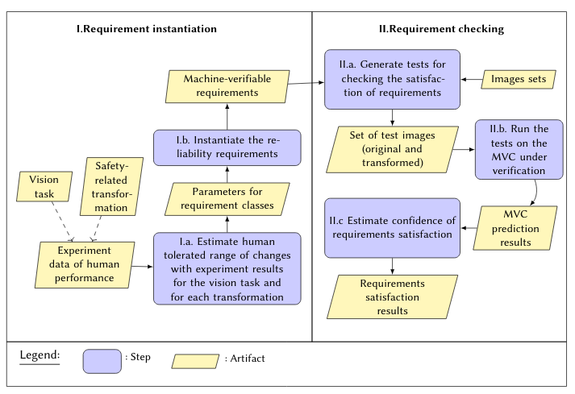

Caroline Hu, Lina Marsso, Krzysztof Czarnecki, Rick Salay, Huakun Shen, and Marsha Chechik¶
In this website, we provide the supplementary material for our ICSE’2022 paper.
Please find in the figure below an overview of the approach that we propose and a summary that is linked to the supplementary material sections.
Overview of our requierement instantiation and checking methods¶
Given (i) a vision task for the MVC, (ii) a safety-related transformation (see Visual changes in images) and (iii) experimental data for estimating the ranges of visual changes that do not affect human performance, we provide a process for instantiating machine-verifiable reliability requirements for MVC (see Estimating) and a process for checking whether an MVC satisfies these instantiated requirements (see Requirement checking method).